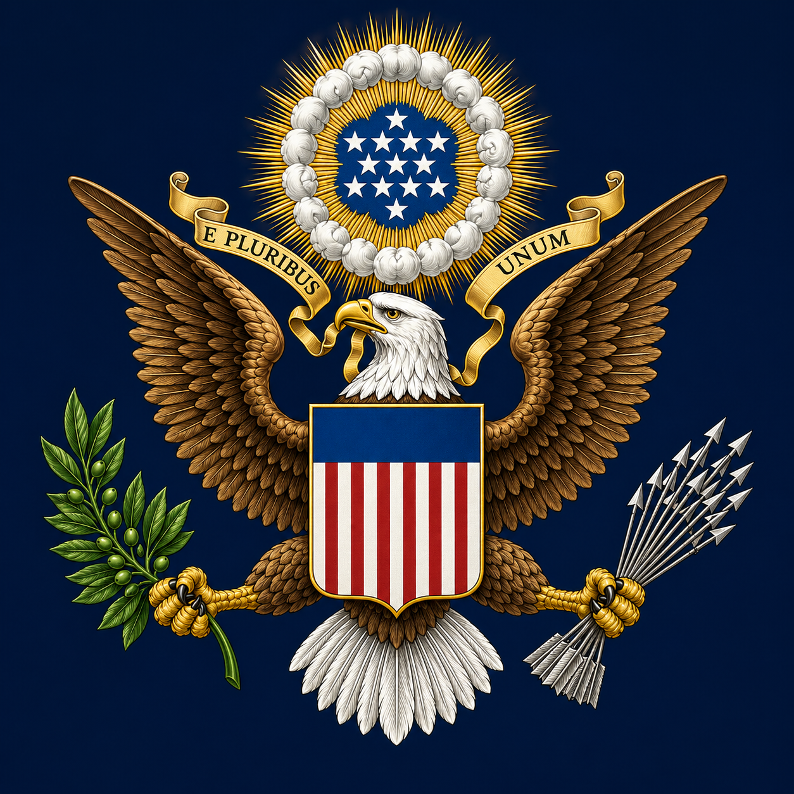
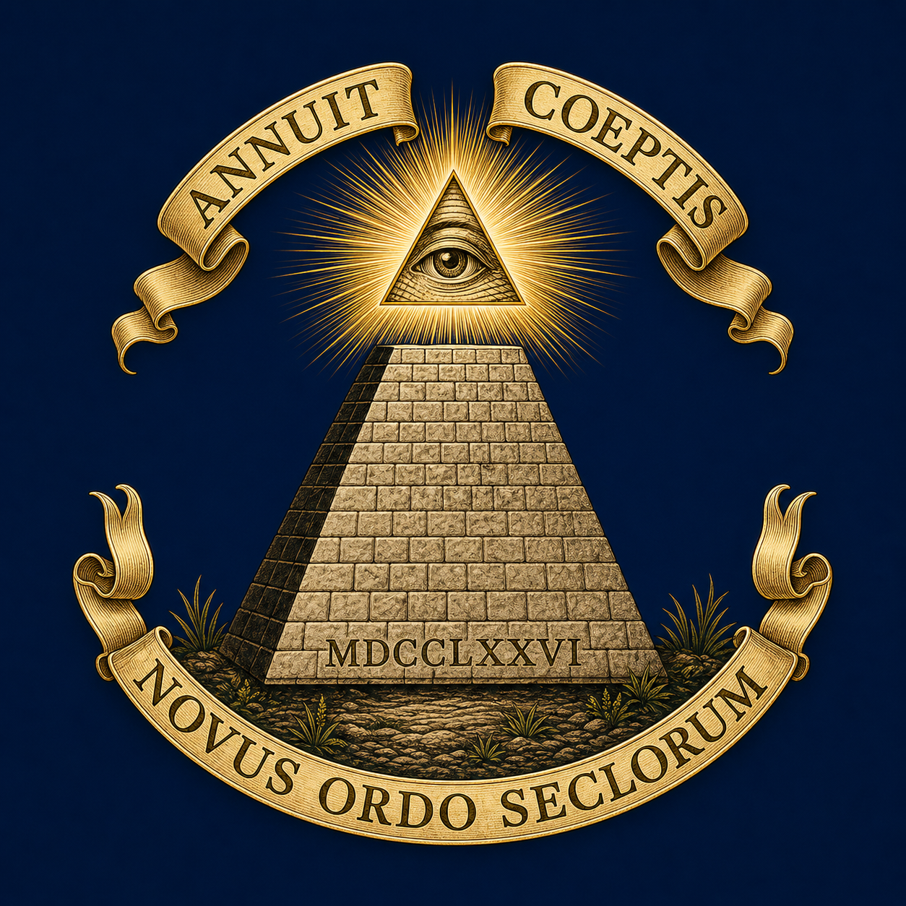

מהו החותם הגדול?
החותם הגדול של ארצות הברית הוא אחד הסמלים הרשמיים החשובים ביותר של המדינה. הוא משמש לאישור מסמכים רשמיים, מייצג את סמכות הממשל הפדרלי, ומרכז בתוכו רעיונות של אחדות, שלום, הגנה, השגחה, התחלה חדשה וחזון היסטורי.

החלק הקדמי — Obverse

החלק האחורי — Reverse
פרטים בסיסיים
החלק הקדמי של החותם
העיטם לבן־הראש
העיט מסמל ריבונות, עצמאות, עוצמה וראייה רחבה. הוא נושא את החותם כולו כייצוג של המדינה.
המגן שעל החזה
המגן כולל 13 פסים, המזכירים את 13 המושבות המקוריות. הוא מונח על העיט ללא תומכים חיצוניים — רמז לכך שהאומה נשענת על עצמה.
ענף הזית והחצים
ענף הזית מסמל שלום, והחצים מסמלים מוכנות להגנה. ראש העיט מופנה אל ענף הזית, כסימן להעדפת שלום על פני מלחמה.
E Pluribus Unum
המוטו הלטיני פירושו: “מתוך רבים — אחד”. הוא מבטא את רעיון האיחוד של מדינות, קהילות וזהויות שונות למסגרת לאומית אחת.
החלק האחורי של החותם
הפירמידה הבלתי גמורה
הפירמידה מסמלת בנייה, יציבות והמשכיות. היא בלתי גמורה כדי לרמוז שהמפעל האמריקאי עדיין נמצא בתהליך התהוות.
MDCCLXXVI
הספרות הרומיות מייצגות את שנת 1776 — שנת הכרזת העצמאות.
עין ההשגחה
העין בתוך המשולש מסמלת השגחה, תקווה והכוונה עליונה מעל המפעל החדש של הרפובליקה.
Annuit Coeptis ו־Novus Ordo Seclorum
הביטויים הלטיניים מבטאים את הרעיון שהמפעל האמריקאי זוכה לברכה, ושהוקם “סדר חדש של הדורות”.
החותם הגדול והדולר
הצדדים של החותם הגדול מוכרים לציבור הרחב במיוחד בזכות הופעתם על שטר הדולר האמריקאי. כך הפך החותם מסמל ממשלתי רשמי לדימוי חזותי מוכר בכל העולם.